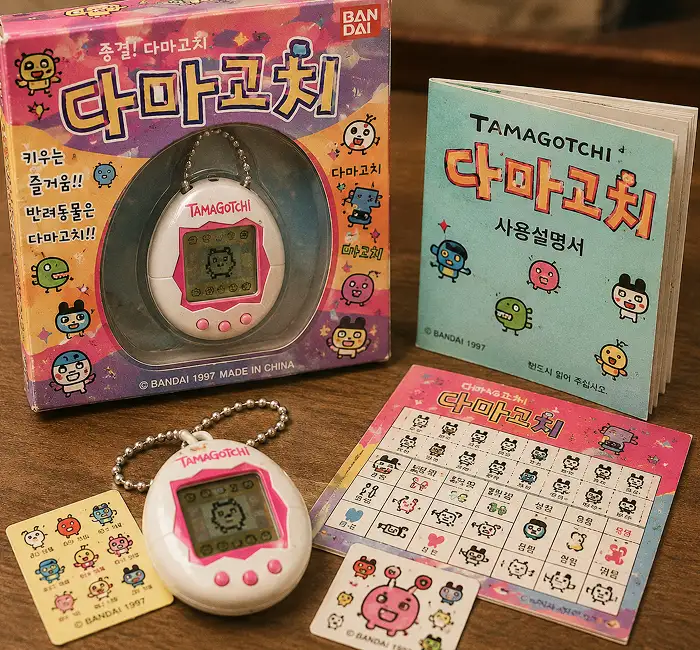

데스크톱 컴퓨터
1990년대


아날로그에서 디지털로 넘어가는 변화의 시기
컴퓨터와 인터넷이 일상속으로 들어오기 시작하고,
새로운 기술과 문화가 우리의 생활을 바꾸어 갑니다.
1990년대의 추억을 디지털 아카이브로 기록합니다.

가정과 학교에서
컴퓨터 보급 확대

언제 어디서나
연락을 가능하게

음악 감상의
새로운 시대
1990년대

1990년대

1990년대

1990년대
1990년대
1990년대
1990년대
1990년대


1990년대

1990년대

1990년대

1990년대


 1980
2000
1980
2000
1990 ARCHIVE
1990년대
1990년대 데스크톱 컴퓨터는 문서 작업부터 게임, 인터넷까지 다양한 기능을 제공하며 디지털 시대의 시작을 이끌었습니다. 가정과 학교, 사무실에서 널리 사용되며 일상 속 필수 기기로 자리 잡았습니다.

디지털 작업
문서와 게임 등 다양한 작업을 수행하던 컴퓨터

인터넷
새로운 정보와 사람들을 연결하던 온라인 문화

데이터 저장
여러 가지 데이터를 쉽게 저장하고 관리할 수 있는 컴퓨터
1990 ARCHIVE
1990년대
1990년대 삐삐는 숫자와 간단한 메시지로 연락을 주고받던 대표적인 통신기기였습니다. 호출을 받으면 공중전화나 집 전화로 다시 연락하는 방식이 일상이었습니다.

무선 호출
숫자와 간단한 메시지로 연락을 주고받던 통신 방식

숫자 메시지
숫자로 약속과 의미를 전달하던 독특한 소통 문화

공중전화
호출을 확인한 뒤 공중전화로 다시 연락하던 방식
1990 ARCHIVE
1990년대
1990년대 CD 플레이어는 선명한 음질로 음악을 감상할 수 있게 해준 디지털 음향기기였습니다. CD를 교체하며 좋아하는 앨범을 듣는 새로운 음악 문화가 자리 잡았습니다.

CD 음악
디지털 음원으로 선명한 음악을 감상하던 매체

음악 재생
좋아하는 앨범을 선택해 음악을 감상하던 방식

디스크 교체
원하는 CD를 교체하며 음악을 감상하던 방식
1990 ARCHIVE
1990년대
1990년대 휴대용 게임기는 언제 어디서나 게임을 즐길 수 있게 해준 대표적인 놀이 기기였습니다. 다양한 게임팩을 교체하며 친구들과 함께 즐기는 문화가 만들어졌습니다.

게임 플레이
친구들과 재밌는 추억을 만들어준 게임

조이스틱
버튼과 방향키를 이용해 게임을 플레이하던 방식

함께 즐기기
친구들과 게임을 즐기며 추억을 만들던 놀이 문화
.webp)
1990 ARCHIVE
1990년대
1990년대 후반에는 초고속 인터넷이 빠르게 보급되며 사람들의 생활이 크게 변화했습니다. 정보를 검색하고 이메일을 주고받거나 온라인 게임을 즐기는 등 인터넷이 새로운 소통과 여가의 중심이 되었습니다. 인터넷의 확산은 디지털 시대의 시작을 알리며 일상 속 필수 기술로 자리 잡았습니다.
.webp)
1990 ARCHIVE
1990년대
1990년대에는 다양한 아이돌 그룹과 가수들이 등장하며 대중음악이 큰 인기를 얻었습니다. 좋아하는 가수의 앨범을 구입하고 음악 방송을 챙겨 보거나 팬클럽 활동을 하는 것이 대표적인 문화였습니다.
.webp)
1990 ARCHIVE
1990년대
1990년대에는 전자 애완동물 장난감인 다마고치가 큰 인기를 끌었습니다. 먹이를 주고 놀아 주며 캐릭터를 키우는 재미에 많은 어린이와 청소년들이 열광했습니다. 다마고치는 언제 어디서나 함께하며 책임감과 즐거움을 느낄 수 있었던 1990년대를 대표하는 장난감으로 자리 잡았습니다.
.webp)
1990 ARCHIVE
1990년대
1990년대에는 휴대전화가 널리 보급되기 전까지 삐삐가 대표적인 연락 수단이었습니다. 상대방의 삐삐 번호로 숫자나 음성 메시지를 남겨 연락을 주고받았으며, 8282(빨리빨리), 1004(천사) 같은 숫자 암호도 유행했습니다. 삐삐는 당시 청소년과 직장인 모두에게 일상 속 필수품이자 1990년대를 대표하는 통신 문화로 자리 잡았습니다.